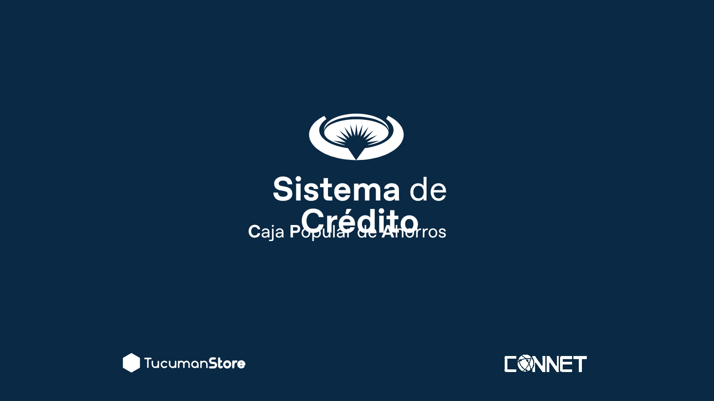

QUÉ SE PROPONE.
Una apertura que ubica el proyecto y sus objetivos en el contexto institucional correspondiente.
CASO 15 / PRESENTACIONES · COMUNICACIÓN INSTITUCIONAL
Traducir sistemas
en ideas claras.
Presentación de una propuesta de sistema de créditos para la Caja Popular de Ahorros de Tucumán. Diseño aplicado a la organización visual de funcionalidades, etapas y requisitos de un proyecto tecnológico.
EXPLORAR PROYECTO
00 / EL DESAFÍO
El material reúne conceptos técnicos y funcionales de una propuesta de software. Para presentarlo hace falta distinguir el propósito del sistema, las principales áreas que cubriría y el esquema de planificación, sin confundir la presentación de un proyecto con su implementación real.
Una apertura que ubica el proyecto y sus objetivos en el contexto institucional correspondiente.
Títulos, agrupaciones y bloques de lectura que reducen la carga cognitiva de contenidos extensos.
Un recorrido desde el panorama general hasta las funciones previstas y las etapas de trabajo.
01 / NARRATIVA VISUAL
Las presentaciones de archivo plantean un sistema centralizado y modular. Aquí se muestran los criterios de comunicación visual con los que se puede organizar esa información, sin publicar especificaciones operativas detalladas.
Portada y contexto de una propuesta digital para la entidad. Lenguaje visual sobrio y foco en el mensaje principal.
DISEÑO EDITORIAL · PRESENTACIÓN
Organización de información sobre el propósito de la plataforma, sus áreas funcionales y el perfil de sus destinatarios.
JERARQUÍA · CLARIDAD · COMUNICACIÓN
Agrupación de fases del proyecto para facilitar la comprensión del proceso propuesto, sin atribuir su ejecución o desarrollo.
ESTRUCTURA · SECUENCIA VISUAL
02 / ORGANIZACIÓN DE CONTENIDOS
Una de las referencias describe funciones vinculadas a la gestión de créditos y diferentes etapas del proyecto. El siguiente esquema es una síntesis editorial para este portfolio, no un diagrama de arquitectura de software, un producto operativo ni una diapositiva original.
Este panel representa la organización del relato visual. No demuestra que el software haya sido construido, probado o puesto en producción.
Alcance: diseño y tratamiento editorial de una presentación conceptual sobre un sistema de créditos. No implica desarrollo, implementación o aprobación institucional del software. La identidad original de CPA y las decisiones técnicas del proyecto no se atribuyen al diseñador.
15 / 17 · PORTFOLIO PERSONAL
Un caso de presentación de información tecnológica en un entorno institucional: organización, legibilidad y comunicación visual como herramientas de trabajo.